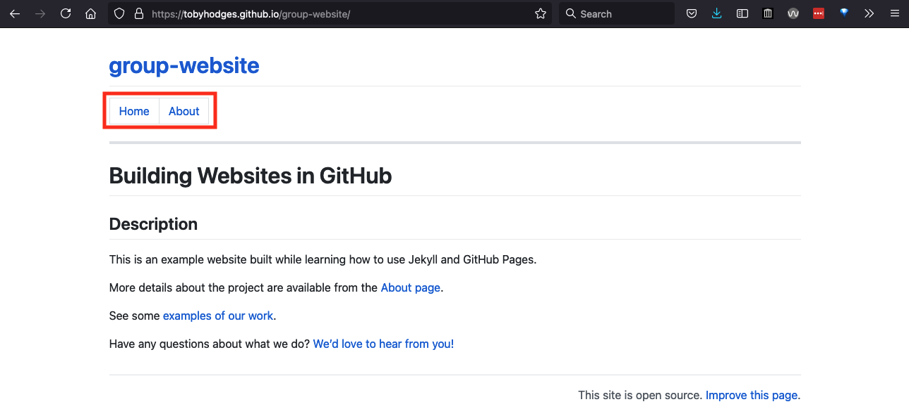

Reusing Blocks of Content
Last updated on 2025-06-19 | Edit this page
Overview
Questions
- “How can I reuse the same chunks of material in multiple pages?”
Objectives
- “Create reusable blocks of content and insert them into pages”
keypoints: - “The content of files in the _includes/
directory can be inserted into a page with
{ % include file_name % }”
In the previous episode, we discussed the benefits of using global and local variables to reuse values throughout our pages. However, repeated use of content in and across websites is usually not limited to individual values such as email addresses and social media handles.
Challenge: What Gets Reused?
Look at the two pages linked below, and browse some other pages on the same site.
- [The Software Sustainability Institute][ssi-homepage]
- [DiverseKids Book Store][diversekids]
What content is being reused between pages on these sites? Pair up and compare your partner’s notes with your own. Can you identify any common type(s) of content that is being reused in these sites?
The Software Sustainability Institute website reuses many structural elements, such as the page header (containing the “top menu,” the institute’s logo, links to social media, etc) and footer (containing copyright and licensing information, links to the privacy policy and accessibility statement, a form to subscribe to the institute’s newsletter, etc). Elsewhere, blocks of text and images are reused in the main body of multiple pages, e.g. blog and news posts all end with a description of how the reader can contact the SSI to discuss the content.
The DiverseKids site has the same kind of shared header and footer on each page: this is a common theme across most websites, helping to improve navigation and other aspects of the user experience and achieve consistent “branding” across the whole site. The books listed under each category include a title, a price, and cover image. The category links themselves are also shared across each page, probably generated from the existing categories of books in the collection, and updated automatically when a category is added or removed.
The most commonly reused content is structural: menus and branding information used to present a consistent and recognisable interface to the user regardless of which specific page of the site they’re visiting. We’ll look more at that in the next episode. But some content, such as contact statements and post/product listings, can be reused in the body of pages. The motivation for reusing content like this is that, if you need to update that content - changing the contact address, updating a price or picture associated with a listing, and so on - you need only change this information in one place for the update to be propagated across the whole site. This is related to the DRY (Don’t Repeat Yourself) principle of good practice in programming.
DRY (Don’t Repeat Yourself) Principle
DRY principle is one of the basic principles of software development aimed at reducing repetition of information.
As far as we know, the sites linked in the previous exercise aren’t built with Jekyll. But the principles behind reusing content apply regardless of the particular framework being used to build the site.
Reusing Site Navigation Header
Let’s look at an example of how we can create a block of common
content and reuse it in multiple pages on our site. Websites typically
have some navigation links at the top of each page to help visitors
navigate to various portions of the site. To make these links appear
above every page on our site, we could add the same code immediately
after the YAML header of each Markdown file in our repository. But if we
wanted to adjust the menu - adjust the navigation link target, add a new
navigation link, remove a link, etc. - we would need to make the same
adjustment on every page. This is both time-consuming and error-prone:
it would be easy to accidentally mistype a link or forget to update one
of the files. Instead, we can go some way to avoid this hassle by using
some magic that Jekyll provides: include tags.
To demonstrate this, we will save an HTML snippet for creating
navigation links into a new file called navigation.html in
a new folder called _includes within our repository. The
folder _includes has special meaning to Jekyll - it tells
Jekyll where to look for code snippets that can be reused (included) in
other parts of the website.
- Click “Create new file” under the “Add file” dropdown on your repository homepage
- In the “Name your file…” box, type
_includes/. As you enter the “/” after the folder name “_includes”, the folder is automatically inserted in the path displayed in front of the box for naming the file you are adding. - You can then name the file
navigation.htmland, when you commit the changes, the_includesfolder will have been added to your repository too. - Insert the following HTML snippet into
navigation.htmland commit the changes:
HTML
{% raw %}<table>
<tr>
<td><a href=".">Home</a></td>
<td><a href="about">About</a></td>
</tr>
</table>
<hr>{% endraw %}The snippet will create a table with a single row with two links
followed by a horizontal line separator. 5. Now insert the following
include directive at the beginning of
index.md:
MARKDOWN
{% raw %}---
lesson-example: "https://carpentries.github.io/lesson-example/"
---
{% include navigation.html %}
# Building Websites in GitHub
## Description
{{ site.description }}
More details about the project are available from the [About page](about).
See some [examples of our work]({{ page.lesson-example }}).
Have any questions about what we do? [We'd love to hear from you!](mailto:{{ site.email }}){% endraw %}Refresh the index.html page and, barring any typos,
e.g. in the name of the file, you should see the navigation links on the
top of the page.
{: .image-with-shadow width=“800px” }
You can add the same include tag at the top of all the
other Markdown files for your site to get the same navigation section
displayed on every page.
Insert the include directive at the top of
about.md so that it now looks as follows:
MARKDOWN
{% raw %}{% include navigation.html %}{% endraw %}
# About
## Project
{% raw %}{{ site.description }}{% endraw %}
## Funders
We gratefully acknowledge funding from the XYZ Founding Council, under grant number 'abc'.
## Cite us
You can cite the project as:
> *The Carpentries 2019 Annual Report. Zenodo. https://doi.org/10.5281/zenodo.3840372*
## Contact us
- Email: [{% raw %}{{ site.email }}{% endraw %}](mailto:{% raw %}{{ site.email }}{% endraw %})
- Twitter: [{% raw %}{{ site.twitter }}]({{ site.twitter }}{% endraw %})The include tag can be used to insert the Markdown or
HTML contained in any file saved within _includes
directory: provide the path to that file relative to
_includes/ and Jekyll will substitute the contents into the
page before rendering it as HTML. Like the _config.yml file
that contains the configuration for your Jekyll site, the
_includes folder has a name beginning with an underscore to
show that it has a special meaning to Jekyll. We will see another
example of this shortly.
Why Not Use Variables?
We must place our blocks of content for inclusion in separate files
because Jekyll does not support substitution of variables within
variables. If you’d like to investigate further, you might try
creating a global variable in your site’s _config.yml which
includes a call to another variable in its value, e.g.
social: "{% raw %}Follow us on [Twitter]({{site.twitter}}){% endraw %}",
and using it in a page
({% raw %}{{site.social}}{% endraw %} for the example
above).
Reusing Footer
The last line of about.md includes contact details -
this is the kind of information you might want to reuse in multiple
places throughout your site as a footer.
MARKDOWN
## Contact us
- Email: [{% raw %}{{ site.email }}{% endraw %}](mailto:{% raw %}{{ site.email }}{% endraw %})
- Twitter: [{% raw %}{{ site.twitter }}{% endraw %}]({% raw %}{{ site.twitter }}{% endraw %})Let’s convert the above Markdown snippet into HTML as shown below and
reuse it in index.md and about.md files. We
will explain why we need the file to be in HTML rather than Markdown
shortly.
HTML
<hr>
<p>Contact us</p>
<ul>
{% raw %}<li>Email: <a href="mailto:{{ site.email }}">{{ site.email }}</a></li>{% endraw %}
{% raw %}<li>Twitter: <a href="{{ site.twitter }}">{{ site.twitter }}</a></li>{% endraw %}
</ul>This HTML snippet will create a horizontal line separator followed by an unordered list with two elements: a contact email address and the Twitter URL wrapped as links using the anchor tag.
Create a file called
footer.htmlinside the_includesfolder to contain the footer HTML snippet.Add the line:
at the bottom of both index.md and about.md
(replacing the equivalent contact section where present).
After refreshing any of these two pages - you should see a horizontal line separating the main page content from the footer of the page which now contains contact information.
 {: .image-with-shadow
width=“800px” }
{: .image-with-shadow
width=“800px” }
This is another example of how we can create a block of common
content and reuse it in multiple pages on our site by using Jekyll’s
include directive and placing code snippets in the
_includes directory (where Jekyll looks for them by name by
convention).
Reusing Link References
You can use include tags to help minimise the effort
required to keep links up-to-date across your site. In the Authoring
with Markdown section, we learned about writing reference-style
links in Markdown, e.g. [link text][link-target] in the
body of the file with a corresponding
[link-target]: https://carpentries.org link reference
(usually all such references are kept at the bottom of the file). Using
include tags, the link references for every page on your
site can be stored in a file in the _includes folder (we
recommend the name _includes/links.md) and inserted into
the end of each page. With this approach, any time you need to update
one of these link references, e.g. if the URL changes to your host
institute website, you only need to change the URL in
_includes/links.md to update the target of all the relevant
links across your site.
Key Points
- “The content of files in the
_includes/directory can be inserted into a page with{ % include file_name % }”